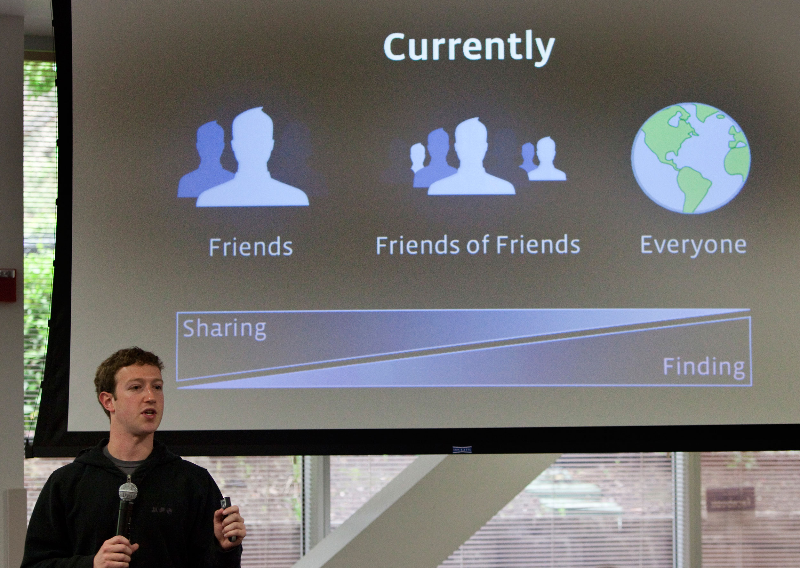

Figure 15.1
In May 2010, the social networking website Facebook was thrown into the news when its chief executive officer, Mark Zuckerberg, announced new changes to the site’s privacy policy. Although the announcement alone did not necessarily garner heavy attention from the news media, the involvement of the Federal Trade Commission (FTC) ramped up public interest.
The previous month, several watchdog groups had sent letters to Congress and the FTC asking for an investigation of Facebook’s privacy policy. The letters attacked the site’s privacy policies, which dated from December 2009 and had been designed to provide users more control over privacy settings. However, PC Magazine noted, “given Facebook’s move toward a more open format as it integrates status updates with search engines like Google and Bing, the site encouraged its users to make more of their data public, and made some of the default settings more open.”Chloe Albanesius, “Facebook Prepping Changes to Privacy Policy,” PC Magazine, May 21, 2010, http://www.pcmag.com/article2/0,2817,2364063,00.asp.
Essentially, Facebook provides three default options for sharing information: with “everyone,” “friends of friends,” or “friends only.” Zuckerberg explained the privacy policy by saying:
We recommended that there be large pieces of information in each of these buckets. For friends only, that’s all of the really sensitive stuff. For friends of friends, it could be who can see the photos and videos of you, which is actually the majority of the content people share on the site. And then for everyone, it’s basic information and status updates and posts like that.Dan Fletcher, “Time’s Q&A With Facebook CEO Mark Zuckerberg,” Time NewsFeed (blog), Time, May 27, 2010, http://newsfeed.time.com/2010/05/27/times-qa-with-facebook-ceo-mark-zuckerberg/
Concern grew that some of Facebook’s default privacy settings allowed everyone, regardless of their level of connection to a user, to access some personal information. In their open letter to Congress, privacy watchdog groups addressed these concerns by stating, “Facebook continues to manipulate the privacy settings of users and its own policy so that it can take personal information provided by users for a limited purpose and make it widely available for commercial purposes…. The company has done this repeatedly and users are becoming increasingly angry and frustrated.”Mark Hachman, “Facebook Targeted by New FTC Privacy Complaint,” PC Magazine, May 7, 2010, http://www.pcmag.com/article2/0,2817,2363518,00.asp. In light of users’ outrage, the letter asked the FTC to get involved.
The FTC is a congressional commission designed to oversee and enforce consumer protections. Despite—or perhaps because of—this stated goal, the FTC’s lack of involvement in Facebook’s privacy settings frustrated many individuals; one letter to Congress “openly worried that the FTC either lacked the power or the motivation to pursue questions of privacy at Facebook.”Mark Hachman, “Facebook Targeted by New FTC Privacy Complaint,” PC Magazine, May 7, 2010, http://www.pcmag.com/article2/0,2817,2363518,00.asp. The FTC responded that the issue was of “particular interest” to them, but as of this writing, no official action has been taken.
The issue has prompted a broader discussion of the government’s role in regulating information disseminated on the Internet. The New York Times articulated the discussion’s central questions: “What can government do to ensure that users have control of their own information, which might live on indefinitely on the web? Would regulation work? Or should government stay out of this arena?”New York Times, “Should Government Take On Facebook?” Room for Debate (blog), May 25, 2010, http://roomfordebate.blogs.nytimes.com/2010/05/25/should-government-take-on-facebook/. Facebook stands by the rights of its users, arguing that “adult users should be free to publish information about their lives if they choose to do so.”New York Times, “Should Government Take On Facebook?” Room for Debate (blog), May 25, 2010, http://roomfordebate.blogs.nytimes.com/2010/05/25/should-government-take-on-facebook/. However, Facebook did respond to the open letter and modified its privacy settings to make it easier for individuals to control their online identities. Yet the debate continues over online privacy and the government’s role in maintaining this privacy. The recent buzz over Facebook’s privacy policies is just one of many examples of the debate over government’s place in the world of media. How is copyright protected across different media outlets? What material is considered appropriate for broadcast? Does the U.S. government have the right to censor information? This chapter explores these and other questions regarding the long and complex relationship between media and the government.